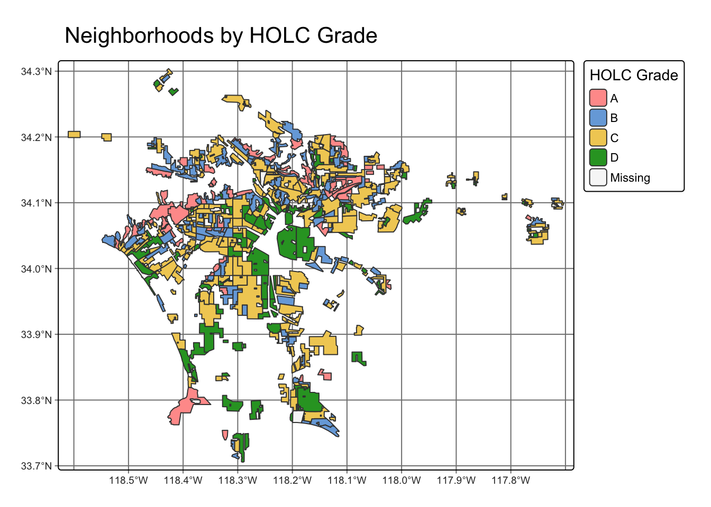

# Library Required packages
library(sf) # For reading spatial data
library(stars) # For reading raster data
library(tmap) # For mapping
library(tidyverse)
library(ggplot2)
library(dplyr)
library(RColorBrewer)
library(testthat)
library(knitr)
library(kableExtra)
library(gt)EDS 223 HW2 - Exploring patterns of environmental justice
Lucian Scher
Read in data
ejscreen_raw <- suppressMessages(st_read("data/ejscreen/EJSCREEN_2023_BG_StatePct_with_AS_CNMI_GU_VI.gdb", quiet = TRUE))
ejscreen_la <- ejscreen_raw |>
filter(CNTY_NAME == "Los Angeles County")
mapping_inequality_raw <- suppressMessages(
st_read("data/mapping-inequality/mapping-inequality-los-angeles.json", quiet = TRUE)
) |>
st_transform(st_crs(ejscreen_raw))
gbif <- suppressMessages(
st_read("data/gbif-birds-LA", quiet = TRUE)
) |>
st_transform(st_crs(ejscreen_raw))Check if CRS match
if (all(
st_crs(ejscreen_raw) == st_crs(gbif),
st_crs(mapping_inequality_raw) == st_crs(gbif)
)) {
message("All three CRS match.")
} else {
message("The CRS do not match.")
}All three CRS match.Part 1: Legacy of redlining in current environmental (injustice)
Data Exploration
head(mapping_inequality_raw) # Show first 10 rows
dim(mapping_inequality_raw) # Check size of dataframe
colnames(mapping_inequality_raw) # See column names1. Neighborhoods by HOLC Grade
# Make grade a factor
mapping_inequality_raw$grade <- factor(mapping_inequality_raw$grade, levels = c("A", "B", "C", "D"))
# Reverse color scale
colors <- rev(brewer.pal(4, "RdYlGn"))
# Plot
tm_shape(mapping_inequality_raw) +
tm_basemap() +
tm_compass(text.size = 0.4) +
tm_scalebar(text.size = 0.3) +
tm_fill(
"grade",
fill.scale = tm_scale_categorical(
values = colors,
labels = c(
"A = Best",
"B = Still Desirable",
"C = Definitely Declining",
"D = Hazardous"
)
),
fill.legend = tm_legend(title = "HOLC Grade")
) +
tm_borders(lwd = 0.2) +
tm_title(
text = "Los Angeles Neighborhoods by HOLC Grade",
size = 0.6
)
Table Summary
# Attach HOLC grades to each EJScreen census block group
ej_holc <- st_join(ejscreen_la, mapping_inequality_raw) |>
st_drop_geometry() # Drop unneeded geometriesej_holc_grade_sum_na <- ej_holc |>
group_by(grade, .drop = FALSE) |>
summarise(n_block_groups = n(), .groups = "drop") |>
mutate(percent = 100 * n_block_groups / sum(n_block_groups))
# Test that NA is present as a grade
test_that("HOLC grade summary includes NA and sums to 100%", {
expect_true(any(is.na(ej_holc_grade_sum_na$grade)),
info = "NA (missing) grades should be included in summary.")})Test passed ü•á# Table of percentages of block groups by grade
ej_holc_grade_sum_na |>
select(grade, percent) |>
mutate(percent = sprintf("%.2f%%", percent)) |>
kbl(
caption = "Grade Percentage Summary Table: Including Missing Grades",
col.names = c("HOLC Grade", "Percent of Block Groups"),
align = c("c", "c"),
booktabs = TRUE,
format = "html"
) |>
kable_styling(
full_width = FALSE,
position = "center",
bootstrap_options = c("striped", "hover", "condensed", "responsive")
) |>
add_header_above(c(" " = 2), bold = TRUE)| HOLC Grade | Percent of Block Groups |
|---|---|
| A | 5.00% |
| B | 13.79% |
| C | 34.02% |
| D | 14.98% |
| NA | 32.22% |
Visualizations
Plot 1: Mean of % low income
# Calculate mean of each variable grouped by HOLC grade.
ej_holc_means <- ej_holc |>
mutate(grade = ifelse(is.na(grade), "No Grade", grade)) |>
group_by(grade) |>
summarise(
mean_low_income = mean(LOWINCPCT, na.rm = TRUE),
mean_pm25 = mean(P_PM25, na.rm = TRUE),
mean_low_life_expectancy = mean(P_LIFEEXPPCT, na.rm = TRUE)
) |>
ungroup()
# Create a vector mapping names to colors
grade_colors <- rev(brewer.pal(4, "RdYlGn"))
my_colors <- c(
"A" = grade_colors[1],
"B" = grade_colors[2],
"C" = grade_colors[3],
"D" = grade_colors[4],
"No Grade" = "grey80"
)
# Add labels back to means
ej_holc_means$grade <- factor(
ej_holc_means$grade,
levels = c("1", "2", "3", "4", "No Grade"),
labels = c("A", "B", "C", "D", "No Grade")
)
# Plot mean % low income by grade
ggplot(ej_holc_means, aes(x = grade, y = mean_low_income, fill = grade)) +
geom_col() +
labs(
title = "LA Mean % Low Income by HOLC Grade",
x = "HOLC Grade",
y = "Mean % Low Income"
) +
theme_minimal() +
scale_fill_manual(
values = my_colors,
labels = c(
"A = Best",
"B = Still Desirable",
"C = Definitely Declining",
"D = Hazardous",
"No Grade"
)
) + # Add percentage axis
scale_y_continuous(labels = scales::percent)
Plot 2: Low life expectancy percentiles on top of Particulate matter percentiles
# Pivot long version for plotting
ej_holc_long <- ej_holc_means |>
pivot_longer(
cols = c(mean_pm25, mean_low_life_expectancy),
names_to = "variables",
values_to = "percentile_means"
)#Plot percentile of Particulate matter next to percentile of low life expectancy
ggplot(data = ej_holc_long, aes(x = grade, y = percentile_means, fill = variables)) +
geom_col() + #(position = "dodge") + # geom_col for bar chart, "dodge" for side-by-side bars
labs(
title = "Life Expectancy",
by = "Grade",
x = "Grade",
y = "Mean Percentile",
fill = "variables"
) +
scale_fill_manual(
values = c("mean_pm25" = "blue", "mean_low_life_expectancy" = "red"),
labels = c("mean_pm25" = "Particulate Matter (PM2.5)", "mean_low_life_expectancy" = "Low Life Expectancy (Percentile)")
) +
theme_minimal()
Both plots show a clear correlation between HOLC grade and environmental injustices. While it is not surprising that lower grades of “residential security” are related to lower income, it does set a precedent for unfair environmental and socioeconomic conditions. When compared directly next to low life expectancy and particulate matter we can see that the historical redlining grades represent lower quality of life and even shorter life for people in worse graded areas. We saw how red lined districts had less trees which is likely a direct causality of worse particulate matter and therefore reasonably can be presumed to have an effect on low life expectancy.
Part 2: Legacy of redlining in biodiversity observations
# Join gbif (Bird Observation data) and mapping_inequality_raw (HOLC grade data)
HOLC_birds <- st_join(mapping_inequality_raw, gbif)# Plot percentage of bird observations within each HOLC grade
ggplot(HOLC_birds, aes(x = grade, fill = grade)) +
# Calculate percentages and ensure plotting happens after the transformation
geom_bar(aes(y = after_stat(count / sum(count) * 100)), color = "black") +
scale_fill_brewer(palette = "RdYlGn", direction = -1) +
labs(
title = "LA Bird Observations by HOLC Grade %",
x = "HOLC Grade",
y = "% of Total Observations",
fill = "HOLC Grade"
) +
theme_minimal() +
theme(
axis.text.y = element_text(angle = 180, hjust = 0.5) # rotate y-axis labels
)
tmap_options(component.autoscale = FALSE)
suppressMessages({
tm_shape(HOLC_birds) +
tm_basemap() +
tm_compass(text.size = 0.4) +
tm_scalebar(text.size = 0.4) +
tm_polygons(
fill = 'grade',
fill.scale = tm_scale_categorical(
values = colors
),
fill.legend = tm_legend(
title = "HOLC Grade",
labels = c(
"A = Best",
"B = Still Desirable",
"C = Definitely Declining",
"D = Hazardous"
)
),
na.color = "grey80",
na.label = "No Grade"
) +
tm_shape(gbif) +
tm_dots(
size = 0.02,
col = "darkblue",
alpha = 0.2
) +
tm_title(text = "LA Bird Sighting Density by HOLC Grade", size = 1)
})
Reflection
Here we can see a clear lack of either birds or bird observation data in red lined zones. This is clear by the appearance of yellow and blue zones that are hardly covered by bird observations in contrast with the blue and pink zones we can barely see because they are swarmed. The Diego Ellis Soto paper considers how our result may not be simply less birds, but instead less data collection going on in red lined zones in general. Our bird observation percentage plot shows a more balanced reporting of bird observations which may be a result of us not considering the unreliability of citizen science.